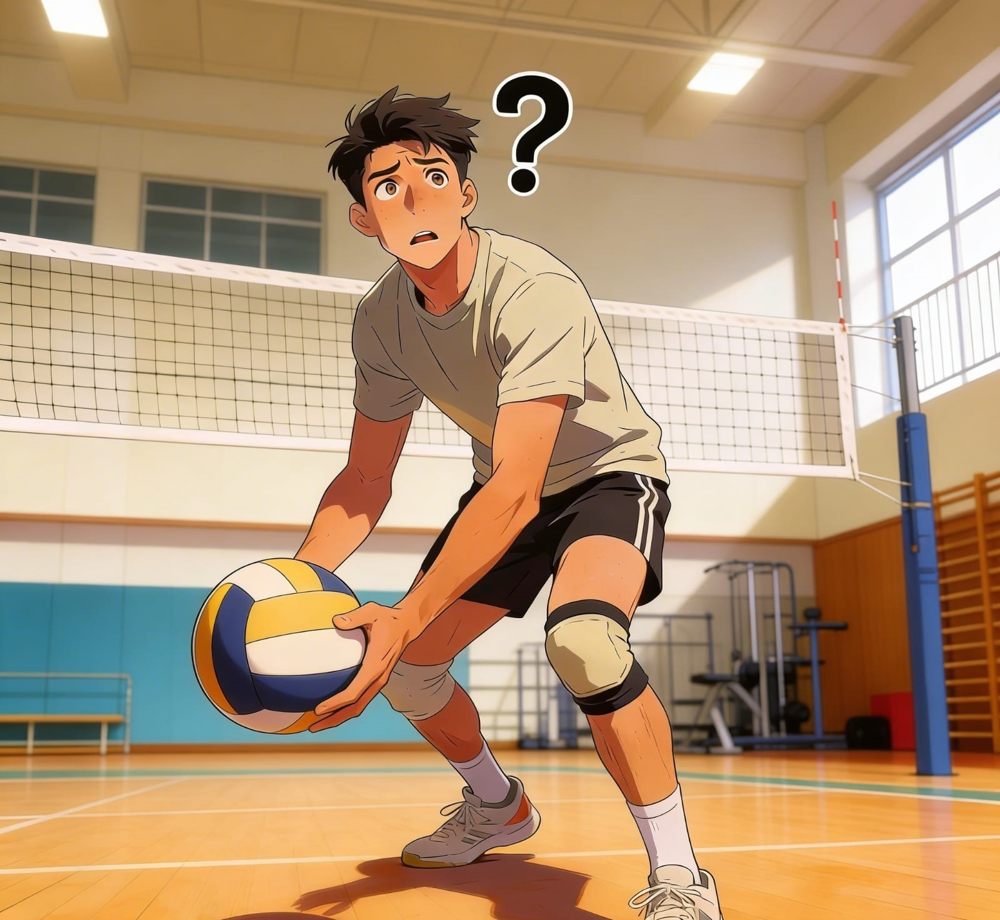

La técnica de golpeo con antebrazos es fundamental en el voleibol. Sin embargo, muchos jugadores presentan errores relacionados con la postura, coordinación y anticipación.
El análisis tradicional depende de la observación visual del entrenador, lo que introduce subjetividad y limita la detección precisa de micromovimientos incorrectos.
Esto puede generar bajo rendimiento deportivo y aumentar el riesgo de lesiones. Por esta razón, se plantea la necesidad de implementar un sistema tecnológico que evalúe la técnica de manera objetiva.